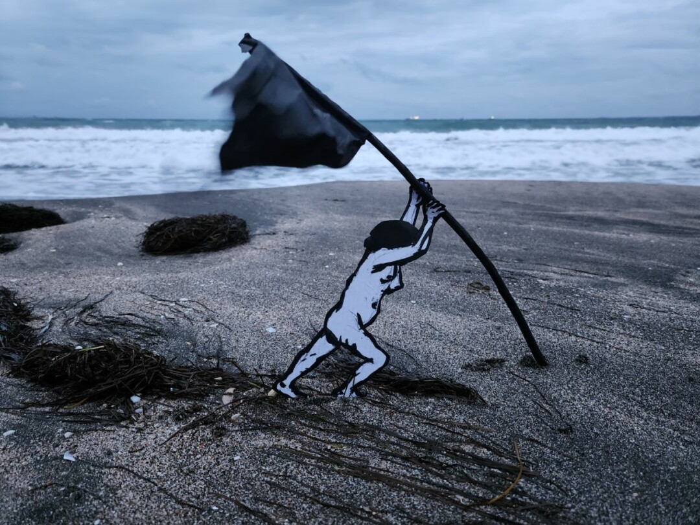

ИСКУССТВО В МАССЫ
PARAZIT возник как проект, связанный с несколькими художественными институциями и программой «Искусство в массы». История объединения включает галерейную деятельность, внешние проекты, ярмарки и самостоятельное пространство.
DIGITAL ARCHIVE / GALLERY / INDEX
Художественное объединение, галерея и непрерывный выставочный проект. Этот сайт собирает историю, людей, выставки, работы и документы PARAZIT в единую систему.

PARAZIT работает как художественное объединение и выставочная система. Архив фиксирует известные события и постепенно дополняется первичными документами.
Хронология и каталог событий PARAZIT. Записи разделены на подтверждённые данные и материалы, требующие дальнейшей проверки.
Изображения, связанные с архивными записями PARAZIT. Выберите запись для просмотра контекста.
Люди и участники, связанные с архивом PARAZIT.
PARAZIT как художественная система.
PARAZIT возник как проект, связанный с несколькими художественными институциями и программой «Искусство в массы». История объединения включает галерейную деятельность, внешние проекты, ярмарки и самостоятельное пространство.
С 2022 года у PARAZIT есть собственное пространство в Санкт-Петербурге — НИИ PARAZIT. Оно продолжает логику выставочной лаборатории и постоянной смены проектов.
Этот цифровой архив не пытается заполнить пробелы выдуманными фактами. Недостающие даты, атрибуции и документы должны отмечаться как неизвестные и постепенно уточняться.
Предыдущая версия сайта PARAZIT рассматривается как самостоятельный исторический документ и будет подключена к архиву отдельным разделом.
WAYBACK / 2016 →